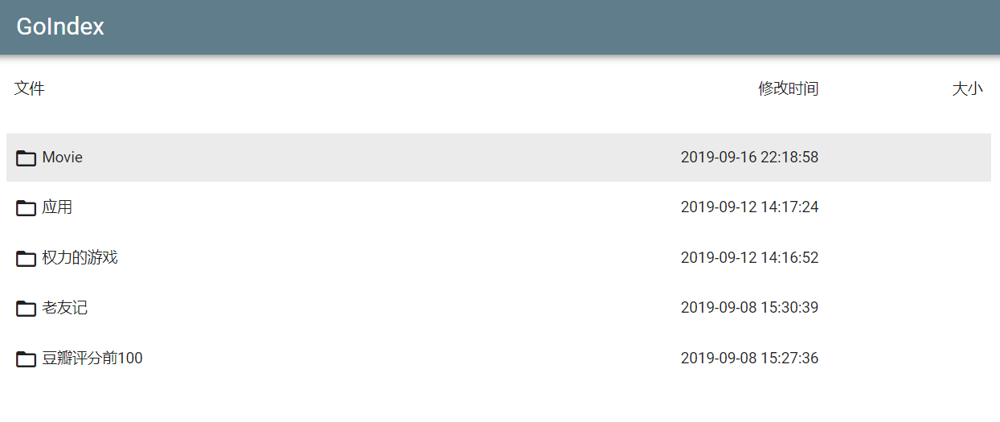

转载文章：GoIndex：一个无需服务器的Google Drive目录索引程序
说明：GoIndex是一款部署在Cloudflare Workers的Google Drive目录索引程序，无需提供服务器，可以直接列出你谷歌网盘的所有文件，同时下载和访问也不需要挂梯子，也可以在线观看某些格式的视频文件，拿来玩玩也是可以的。
截图

安装
Github地址：https://github.com/donwa/goindex
首先肯定是需要一个谷歌网盘的，个人的话容量有点小，如果想容量大的，可以免费申请一个无限容量的Google Drive网盘，申请方法查看→传送门。
这里直接使用作者提供的快速部署方法，由于使用的是rclone的google api，高峰期难免会出现点问题，后面也会说下使用自己的api部署方法。
1、获取Workers代码
先访问：https://installen.gd.workers.dev/，点击`GET AUTH CODE，验证你的谷歌账号获取Auth code`。
然后开始输入你的Auth code，其它可以先默认，然后点击BUILD获取你的代码。
开头的相关参数，可自行修改：
1 |
|
文件夹ID获取方法，点击根目录某个文件夹，地址栏为：https://drive.google.com/drive/folders/1C4Aro，则1C4Aro为文件夹ID。
2、部署到Workers
首先登录cloudflare，官网→传送门，然后首页右侧可以看到Workers入口。.png)
点进去后新建一个Workers子域名，也就是你的专属域名，填入确认后就更改不了了，所以别乱填。.png)
接下来点击Create a Worker创建一个Worker。.png)
把你之前获取的Workers代码粘贴进去，然后可以在左上角双击修改域名，再点击Save and Deploy即可。.png)
最后打开分配的子域名即可，此后修改配置可以自行修改Workers代码。
绑定域名
如果想绑定自己的域名，就需要先将自己的域名转到cloudflare，然后点自己的域名，解析一个A记录，IP地址随意。.png)
然后在上方找到Workers，选择后，点击页面下的Add route，进行如下设置。.png)
按照图中的格式，填上自己的域名，并选择对应的Workers程序即可。.png)
API部署
这里也可以使用自己的API部署，好处就是安全点，高峰期也不容易爆炸，当然安装会麻烦点，如果不经常使用的话，还是建议用上面的方法快速部署。到Google Developer Console进行如下操作。
1、获取GDrive客户端
首先需要选择一个项目，如果没有就先创建一个，然后启用Google Drive API，启用地址：点击进入，注意这里使用个人账号操作。.png)
再创建一个OAuth client ID，创建地址：点击进入。应用类型选择其他(Other)，名称自己填，这里博主填的GoIndex。.png)
然后你会获得自己的客户端ID和客户端密钥，再复制下来。.png)
2、获取refresh_token
这里使用Rclone来获取refresh_token，先登录VPS，先安装依赖，使用命令：
1 | #CentOS系统 |
再安装Rclone，使用命令：
1 | curl https://rclone.org/install.sh | bash |
开始配置，使用命令：
1 | rclone config |
会出现以下信息：
1 | n) New remote |
此时我们在配置过程中就获取到了refresh_token参数，如果忘了的可以查看配置文件。
不知道配置文件在哪的，可以使用命令：
1 | rclone config file | grep rclone.conf |
3、获取并修改Workers代码Workers代码可以点击该地址查看→传送门，先复制代码，部分修改可参考上面，不同的是，需要填上自己的api信息，如下：
1 |
|
最后就可以部署Workers代码了，方法参考上面的快速部署。